Toraks BT
Toraks bilgisayarlı tomografisi (BT), göğüs cerrahisinde tanı, evreleme, ameliyat planlaması ve travmada en çok kullanılan görüntüleme yöntemidir. Bu sayfada BT'nin temel kavramları, pencereler, kontrastlı BT'de damarların ve mediasten yapılarının seviye seviye tanınması, parankim ve nodül değerlendirmesi yer alıyor.
1Temel kavramlar: Hounsfield ve pencereler
BT'de her dokunun X ışınını ne kadar zayıflattığı Hounsfield birimi (HU) ile ölçülür. Su 0, hava −1000 HU'dur; yoğunluk arttıkça değer yükselir ve doku görüntüde daha beyaz görünür.
| Doku | Yaklaşık HU | Görünüm |
|---|---|---|
| Hava | −1000 | Siyah |
| Akciğer parankimi | −900 ile −700 | Koyu gri |
| Yağ | −100 ile −50 | Koyu gri |
| Su, berrak sıvı (efüzyon, kist) | 0 ile 20 | Gri |
| Yumuşak doku, kas, kan (kontrastsız) | 30 ile 60 | Açık gri |
| Taze kan (hematom) | 50 ile 80 | Açık gri |
| Kontrastlı damar | 150 ile 400+ | Beyaz |
| Kemik, kalsifikasyon | 400 ile 1000+ | Beyaz |
Pencereler
Göz yalnızca sınırlı sayıda gri tonunu ayırt edebildiği için aynı kesit farklı "pencerelerde" incelenir. Pencere genişliği (WW) gösterilen HU aralığını, pencere seviyesi (WL) bu aralığın merkezini belirler.
| Pencere | Yaklaşık ayar | Ne için? |
|---|---|---|
| Akciğer (parankim) | WL −600, WW 1500 | Parankim, bronşlar, nodül, buzlu cam, amfizem, pnömotoraks |
| Mediasten (yumuşak doku) | WL 40, WW 400 | Damarlar, kalp, lenf nodları, kitleler, plevral sıvı, nodülün solid bileşeni, kalsifikasyon |
| Kemik | WL 500, WW 2000 | Kot, sternum, vertebra kırıkları; kemik lezyonları |
2Görüntüye nasıl bakılır?
- Aksiyel kesitlere hastanın ayak ucundan bakılıyormuş gibi bakılır: hastanın sağı ekranın solunda, ön (sternum) üstte, vertebra altta.
- Kesitler yukarıdan aşağıya (toraks girişinden diyaframa) ardışık olarak gezilir; tek bir kesite bakarak karar verilmez. Bir yapının damar mı nodül mü olduğu, ardışık kesitlerde devam edip etmediğine bakılarak anlaşılır.
- Görüntüleme sistemlerinde "A" ön (anterior), "R" sağ (right) tarafı gösterir.
3Kontrastlı ve kontrastsız BT
- Kontrastsız BT: Parankim, nodül takibi, pnömotoraks, kemik yapılar ve kalsifikasyon için yeterlidir. Damarlar ile lenf nodları ve kitleler benzer yoğunlukta olduğu için mediasten değerlendirmesi sınırlıdır.
- Kontrastlı BT: İyotlu kontrast madde damar yolundan verilir. Damarlar beyazlaşır ve lenf nodlarından, kitlelerden ayrılır. Akciğer kanseri evrelemesi, mediasten kitleleri, ampiyem ("ayrık plevra" işareti), vasküler yaralanma ve travmada tercih edilir.
- BT pulmoner anjiyografi: Görüntüler kontrastın pulmoner arterlerde en yoğun olduğu anda alınır; pulmoner emboli, pulmoner arterlerde dolum defekti olarak görülür.
- Kontrast öncesi dikkat: Böbrek işlevleri (kreatinin, eGFR), iyotlu kontrast alerjisi öyküsü, metformin kullanımı ve hipertiroidi sorgulanır.
Kontrastın verildiği taraf: Kontrast genellikle bir kol veninden verilir. Enjeksiyon tarafındaki aksiller, subklavyen ve brakiyosefalik vende çok yoğun kontrast ve ondan yayılan çizgisel artefaktlar görülür. Bu, görüntüye bakarken kontrastın hangi koldan verildiğini ve venöz yolu takip etmeyi sağlar (aşağıdaki görüntüler).
4Kontrastlı BT'de yapılar: seviye seviye
Aşağıdaki kesitler kontrastlı toraks BT'den alınmıştır ve kontrast maddenin koldan kalbe izlediği venöz yolu, ardından arteriyel yapıları sırasıyla gösterir. Görüntülere dokunarak büyütebilirsiniz. Tüm kesitlerde hastanın sağı ekranın solundadır.
A. Venöz yol: kontrastın koldan kalbe yolculuğu
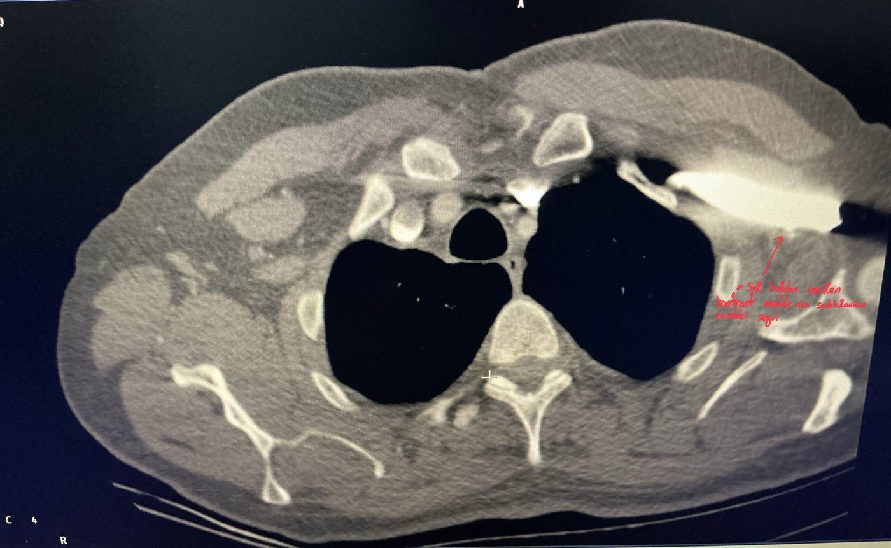
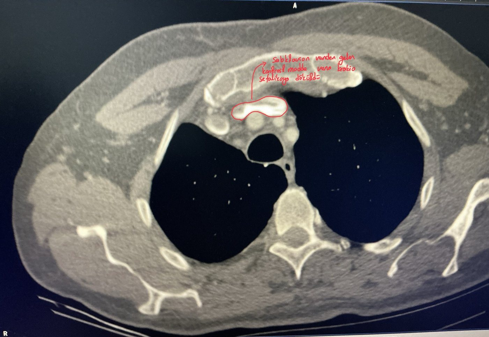
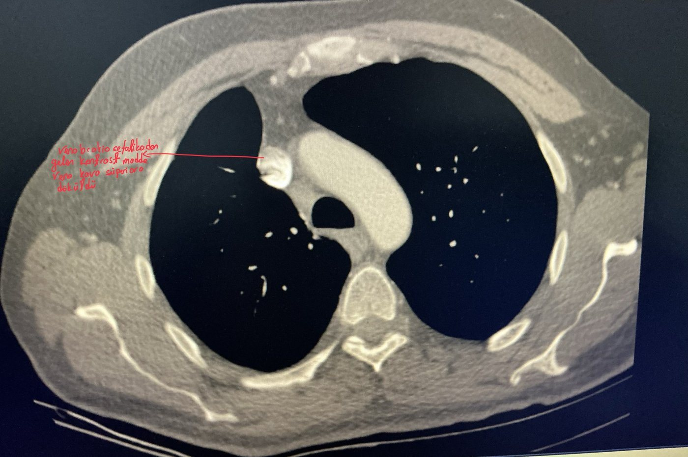
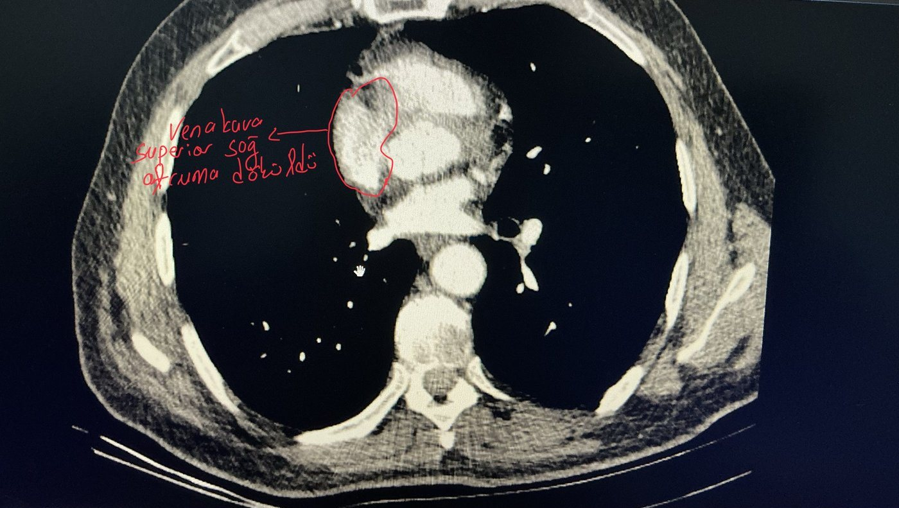
B. Arteriyel yapılar
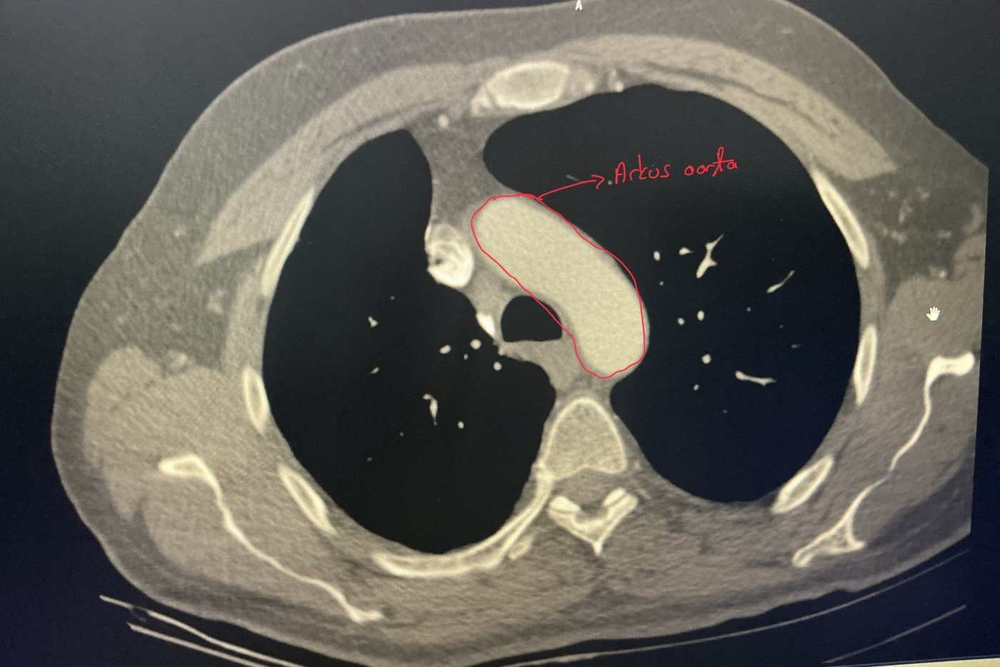
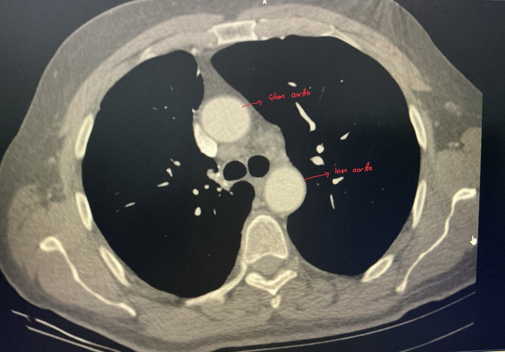
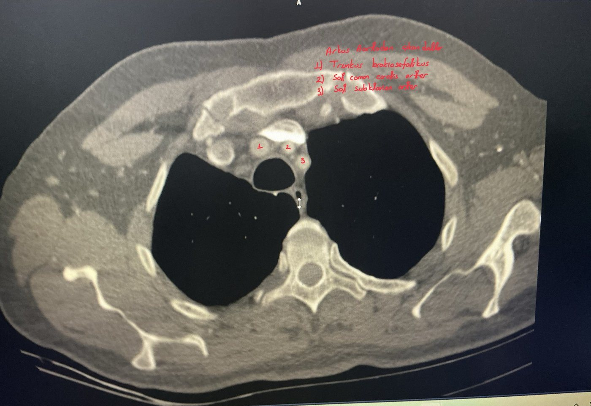
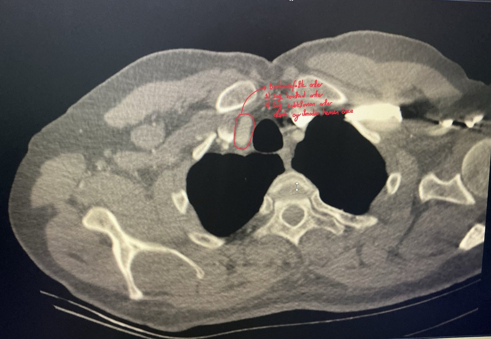
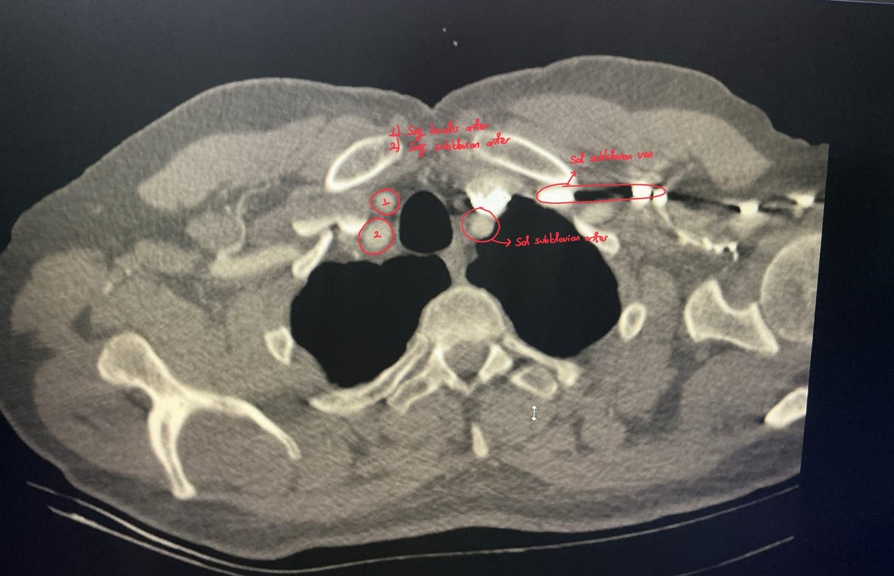
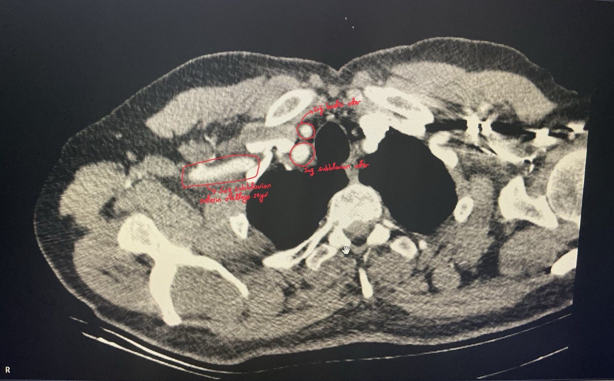
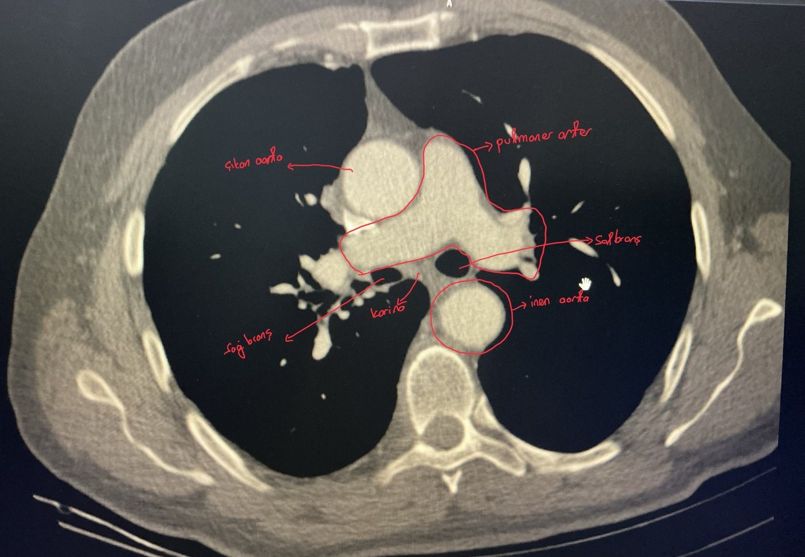
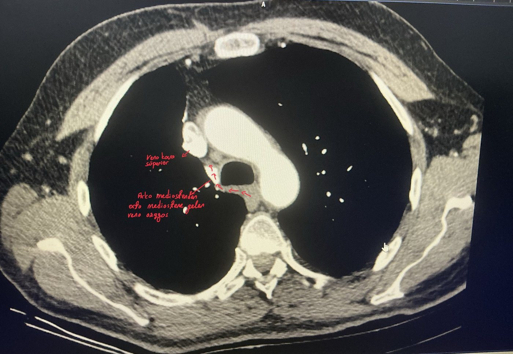
Bu yapıların anatomisi için: Toraks Anatomisi → Büyük damarlar ve T4–T5 düzlemi.
5Sistematik okuma sırası
Dr. Hilmi Keskin'in vurguladığı gibi yapılar teker teker ve her seferinde aynı sırayla değerlendirilmelidir:
- Hasta ve tetkik bilgileri: kimlik, tarih, kontrastlı mı, eski tetkiklerle karşılaştırma.
- Mediasten penceresi: büyük damarlar (yukarıdaki sırayla), kalp ve perikard, trakea ve özofagus, lenf nodları, plevral sıvı, göğüs duvarı yumuşak dokuları.
- Akciğer penceresi: Önce sağ akciğer yukarıdan aşağıya, sonra sol akciğer; ardından ikisi birlikte karşılaştırılır. Havalanma farkı, bronşlar, damarlar, nodül, buzlu cam, konsolidasyon, amfizem ve pnömotoraks aranır.
- Kemik penceresi: kotlar tek tek sayılır; sternum, klavikula, skapula ve vertebralar.
- Üst karın: görüntüye giren karaciğer, dalak, böbreküstü bezleri (metastaz açısından).
6Parankim: buzlu cam ve konsolidasyon
- Buzlu cam: Parankim yoğunluğu artmıştır, ancak içinden geçen damarlar ve bronş duvarları hâlâ seçilebilir; buzlu camın arkasından bakılıyormuş gibi bir görünüm oluşur. Alveollerin kısmen dolması veya interstisyumun kalınlaşmasını gösterir: ödem, interstisyel ve viral pnömoniler, kanama, erken fibrozis, adenokarsinom yelpazesi.
- Konsolidasyon: Yoğunluk artışı daha fazladır ve damarlar ile bronş duvarları seçilemez; içinde hava bronkogramı görülebilir. Alveoller sıvı, eksüda, kan veya hücreyle tamamen dolmuştur (pnömoni, kontüzyon, tümör).
- Halo ve ters halo işaretleri: Ortada solid, çevrede buzlu cam ise halo; çevrede solid halka, ortada buzlu cam ise ters halo işaretidir (ör. organize pnömoni, COVID-19 iyileşme dönemi).
- COVID-19 pnömonisinde tipik dağılım: iki taraflı, periferik ve arka bölgelerde, birden fazla lobu tutan buzlu cam ve konsolidasyonlar; iyileşme döneminde fibrotik bantlar (Dr. Hilmi Keskin).
Alveol düzeyindeki karşılığı için: Toraks Anatomisi → Alveol.
7Nodüller ve mediasten penceresi
Akciğer nodülü, 3 cm'den küçük, yuvarlak ve parankimle çevrili opasitedir (3 cm'den büyükse kitle denir). Nodülün tipi, akciğer ve mediasten pencerelerinin birlikte değerlendirilmesiyle belirlenir.
- Solid nodül: Her iki pencerede yaklaşık aynı büyüklükte görülür.
- Kısmi solid (part-solid) nodül: Akciğer penceresinde buzlu cam ve solid bileşen birlikte; mediasten penceresinde yalnız solid bileşen kalır. Malignite açısından en riskli gruptur; solid bileşenin büyüklüğü invazyonla ilişkilidir.
- Saf buzlu cam nodülü: Akciğer penceresinde görülür, mediasten penceresinde tamamen kaybolur, çünkü yumuşak doku yoğunluğunda bileşeni yoktur. Geçici nedenler (enfeksiyon, kanama) olabileceği gibi, kalıcıysa adenokarsinom yelpazesinin erken formları olabilir.
- Kalsifikasyon: Mediasten penceresinde değerlendirilir. Santral, difüz, laminer veya patlamış mısır biçimindeki kalsifikasyon benignliği düşündürür (granülom, hamartom).
- Damarla karışma: Nodül sanılan yapı ardışık kesitlerde dallanarak devam ediyorsa damardır; kontrastlı BT'de damarla aynı yoğunlukta kontrastlanır.
İnsidental nodüllerde takip (Fleischner önerileri, erişkin, özet)
| Nodül | Öneri |
|---|---|
| Saf buzlu cam < 6 mm | Rutin takip gerekmez |
| Saf buzlu cam ≥ 6 mm | 6–12 ayda BT; kalıcıysa 5 yıla kadar 2 yılda bir |
| Kısmi solid ≥ 6 mm | 3–6 ayda BT; değişmiyor ve solid bileşen < 6 mm ise yıllık takip; solid bileşen ≥ 6 mm ise yüksek şüpheli (PET/BT, biyopsi veya rezeksiyon) |
| Solid nodül | Boyuta ve hastanın risk durumuna göre takip; büyüyen veya şüpheli morfolojideki nodül ileri değerlendirilir |
Buzlu cam nodüllerin bir kısmı kontrol BT'de kaybolur; bu nedenle ilk kontrol erken yapılır. Takip kararları hastanın risk faktörleri ve güncel kılavuzlarla birlikte verilmelidir.
8Kemik penceresi ve travma BT'si
- Travmada önce kemik penceresine bakılır ve kotlar tek tek sayılır; kırık hatları, kortikal devamsızlık ve deplasman aranır. Sternum, klavikula, skapula ve vertebralar da değerlendirilir (Dr. Hilmi Keskin).
- Ardından parankim penceresinde akciğer kontüzyonu, subplevral kanama, laserasyon, pnömotoraks ve hemotoraks aranır.
- Sırtüstü yatan ve obez hastalarda akciğerlerin alt-arka bölgelerinde görülen bağımlı bölge atelektazisi kontüzyonla karışabilir. Bkz. Atelektazi.
- Mediasten penceresinde mediasten hematomu, büyük damar yaralanması, perikard sıvısı ve diyafram bütünlüğü değerlendirilir.
Kot sayma ve kot kırıkları için: Akciğer Grafileri → Kot sayma ve kot kırıkları.
BT kesitleri Ass. Dr. Mustafa Türker'in arşivinden alınmış, anonimleştirilmiş ve kırpılmıştır; üzerlerindeki kırmızı işaretlemeler kendisine aittir. Metin, Dr. Hilmi Keskin'in YouTube kanalındaki toraks tomografisi, travma ve COVID-19 tomografisi anlatımları, Netter Atlas of Human Anatomy (8. baskı) kesit anatomisi notları ve standart radyoloji kaynakları esas alınarak hazırlanmıştır. Şemalar şematiktir.